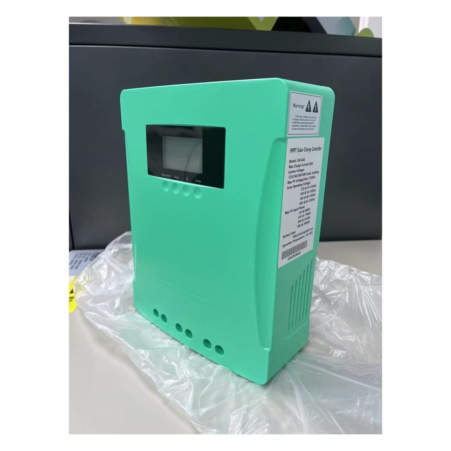
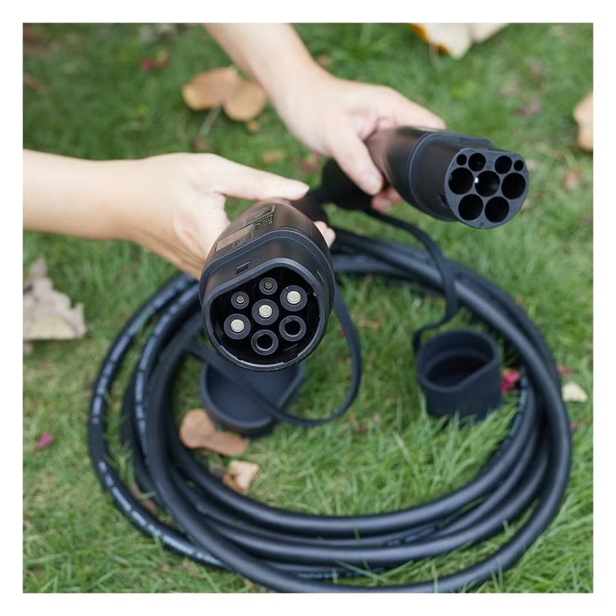

Start / Energie / Mikro-Wechselrichter 800 VA für Balkonkraftwerke (WLAN, 2 MPPT, Schuko-Anschlusskabel)

Energie
Mikro-Wechselrichter 800 VA für Balkonkraftwerke (WLAN, 2 MPPT, Schuko-Anschlusskabel)
Für den Handel zählt neben der Technik die vollständige Dokumentation: Konformitätserklärung, Funk-Prüfbericht, EU-Verantwortlicher und ElektroG-Registrierung.
Technische Daten
| Nennleistung AC | 800 W (max.; 800 VA) |
|---|---|
| DC-Eingang | 2 Eingänge, 2 MPP-Tracker; empfohlene Modulleistung 210–560 W (2 Module) |
| MPPT-Spannungsbereich | 25–55 V; max.; Eingangsstrom 2 × 13 A, Kurzschlussstrom 2 × 19,5 A |
| Wirkungsgrad | max.; 96,5 %, MPPT-Wirkungsgrad > 99 % |
| Schutzart / Kühlung | IP67, lüfterlos (natürliche Kühlung), -40 bis +65 °C (Derating ab 45 °C) |
| Kommunikation | WLAN integriert, Modulüberwachung per App |
| Abmessungen | 280 × 190 × 40 mm (ohne Stecker und Halterung) |
| Zolltarifnummer (HS) | 85044084 |
EU-Normen und Vorschriften
VDE-AR-N 4105Erzeugungsanlagen am Niederspannungsnetz (Einheitenzertifikat, NA-Schutz)DIN VDE V 0126-95Steckerfertige Erzeugungsanlagen (Steckersolargeräte), SchnellabschaltungEN 62109-1/-2Sicherheit von Wechselrichtern für PV-AnlagenEN IEC 61000-6-1/-2/-3/-4Elektromagnetische Verträglichkeit (EMV-Fachgrundnormen)RED 2014/53/EU + EN 18031Funkanlagen-Richtlinie (WLAN), CybersicherheitsanforderungenGPSR (EU) 2023/988 / ElektroGEU-Verantwortlicher, WEEE-Registrierung (stiftung ear)
Passt dazu
PV-Modul 450 W (bifazial Glas-Glas)Bifaziales Glas-Glas-Modul mit 450 Wp für Dach- und Freiflächenanlagen.
Plug-in-Balkonspeicher 2–3 kWh (LiFePO4) für BalkonkraftwerkeModularer LiFePO4-Balkonspeicher mit 2,12 kWh, vier MPPT-Eingängen und integriertem Wechselrichter für das Balkonkraftwerk.
Solar-Verlängerungskabel 6 mm² mit MC4-Steckern (Set rot/schwarz, 2–10 m)Konfektioniertes PV-Verlängerungskabel 6 mm² mit MC4-Stecker und -Buchse für die DC-Verkabelung von Modulen und Wechselrichtern.
PV-Modulhalterung Aluminium für Balkon, Flachdach und Garten (Set, verstellbarer Neigungswinkel)Aluminium-Aufständerung für gerahmte PV-Module mit einstellbarem Neigungswinkel, ballastierbar ohne Dachdurchdringung.
Weitere Produkte dieser Kategorie
Diesel-Stromerzeuger 50 kVA (schallgedämmt)Schallgedämmtes Dieselaggregat 400/230 V für Notstrom und netzferne Baustellen.
Mobiler Batteriespeicher 10-30 kWh (LiFePO4)Fahrbarer LFP-Speicher mit Wechselrichter für leisen, abgasfreien Baustellenstrom.
Luft-Wasser-Wärmepumpe 10 kW (Monoblock, R290)Monoblock-Wärmepumpe mit Propan-Kältemittel für Heizung und Warmwasser in Sanierung und Neubau.
Hybrid-Wechselrichter 10 kW (3-phasig, 48-V-Batterie)Dreiphasiger Hybrid-Wechselrichter für PV, Niedervolt-Batterie, Netz und Notstrom.
Benzin-Inverter-Stromerzeuger 3 kW (schallgedämmt)
Diesel-Notstromaggregat 20 kVA (schallgedämmt)Kompaktes schallgedämmtes Dieselaggregat 400/230 V für Notstrom, Baustellenverteiler und kleine Gewerke.
Diesel-Notstromaggregat 100 kVA (schallgedämmt)Schallgedämmtes Dieselaggregat 400/230 V für Großbaustellen, Rückbauobjekte und Notstrom ganzer Bauabschnitte.
Stationärer Batteriespeicher 10 kWh (LiFePO4, 48 V)
LiFePO4-Powerstation 1000 W (tragbar)Tragbare Powerstation mit LiFePO4-Zellen für Camping, Notstrom und Gartenhaus.

MPPT-Solarladeregler 60 A (12/24/48 V)MPPT-Laderegler für Inselanlagen, Wohnmobile und Gartenspeicher.
Wallbox 11 kW Typ 2 (3-phasig, mit Kabel)AC-Wallbox 11 kW für Zuhause mit Typ-2-Ladekabel.
Einphasiger Wechselstromzähler DIN-Schiene (RS485, MID)Zähler für PV-Einspeisung und Verbrauchsmessung im Verteiler.
Faltbares Solarpanel 200 W (monokristallin, tragbar)

Typ-2-Ladekabel 32 A (Mode 3)
AGM-Batterie 12 V 100 Ah (zyklenfest, wartungsfrei)Wartungsfreie Bleibatterie für Solar, Wohnmobil und Boot.
PV-DC-Trennschalter 1000 V / 32 A (4-polig)Lasttrennschalter für den DC-Strang zwischen Modulen und Wechselrichter.